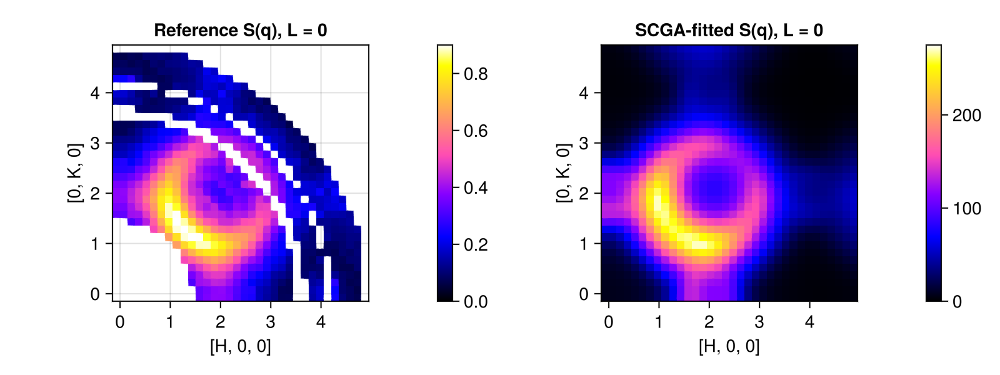
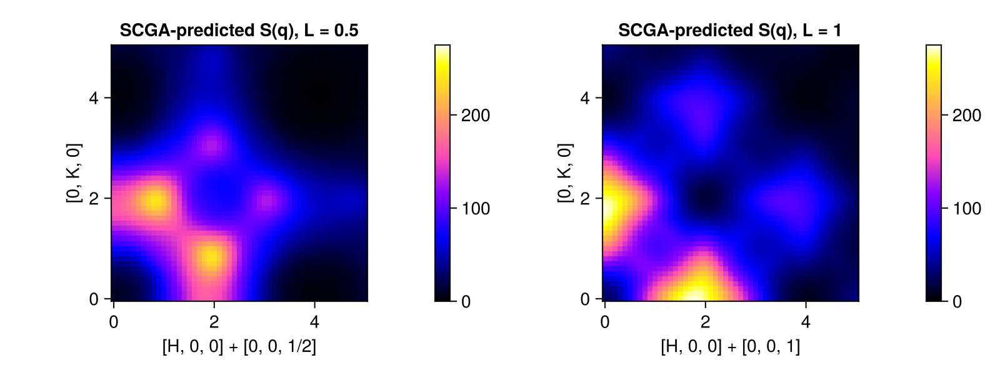
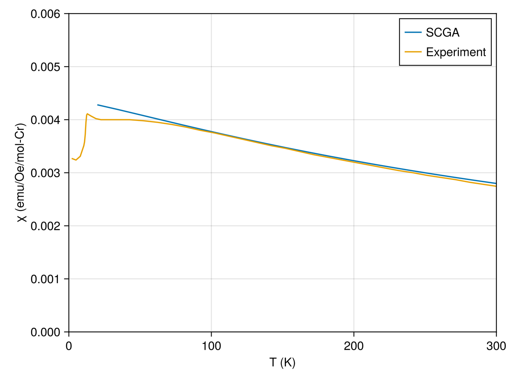

Download this example as Julia file or Jupyter notebook.
10. Fitting to diffuse scattering data
The self-consistent Gaussian approximation, SCGA, calculates the static structure factor $\mathcal{S}(𝐪)$ and other magnetic quantities in the paramagnetic phase. Comparison to diffuse scattering data offers a robust pathway to model fitting.
Fitting to $\mathcal{S}(𝐪)$ data in the paramagnetic phase is convenient because of its smoothness. Another convenience is that the SCGA calculator does not require knowledge of the magnetically-ordered ground state, which can change with model parameters.
This tutorial uses SCGA to fit diffuse scattering and magnetic susceptibility data for the frustrated pyrochlore antiferromagnet MgCr₂O₄. The fitted exchange interactions, up to third nearest neighbor, are in reasonable agreement with Bai et al., Phys. Rev. Lett. 122, 097201 (2019).
Sunny's SCGA fitting workflow is inspired by the Spinteract code: J. Paddison, J. Phys.: Condens. Matter 35, 495802 (2023).
using Sunny, GLMakie, LinearAlgebraThe Cr atoms in in MgCr₂O₄ occupy a pyrochlore sublattice.
units = Units(:K, :angstrom)
latvecs = lattice_vectors(8.3342, 8.3342, 8.3342, 90, 90, 90)
positions = [[1/2, 1/2, 1/2]]
cryst = Crystal(latvecs, positions, 227)Crystal
Spacegroup 'F d -3 m' (227)
Lattice params a=8.334, b=8.334, c=8.334, α=90°, β=90°, γ=90°
Cell volume 578.9
Wyckoff 16d (site sym. '.-3m'):
1. [1/2, 0, 0]
2. [3/4, 1/4, 0]
3. [0, 1/2, 0]
4. [1/4, 3/4, 0]
5. [3/4, 0, 1/4]
6. [1/2, 1/4, 1/4]
7. [1/4, 1/2, 1/4]
8. [0, 3/4, 1/4]
9. [0, 0, 1/2]
10. [1/4, 1/4, 1/2]
11. [1/2, 1/2, 1/2]
12. [3/4, 3/4, 1/2]
13. [1/4, 0, 3/4]
14. [0, 1/4, 3/4]
15. [3/4, 1/2, 3/4]
16. [1/2, 3/4, 3/4]
To accelerate the calculation, it is most efficient to work in the primitive cell. Classical simulations at high temperature will be more accurate when the spin magnitudes are rescaled to satisfy the quantum sum rule, $|𝐒|^2 = s(s+1)$ per site. Enable this with set_spin_rescaling_for_static_sum_rule!.
sys = System(cryst, [1 => Moment(; s=3/2, g=2.05)], :dipole)
sys = reshape_supercell(sys, primitive_cell(cryst))
set_spin_rescaling_for_static_sum_rule!(sys)Assign labels to the Heisenberg exchange interactions up to third nearest neighbor. Couplings $J_{3a}$ and $J_{3b}$ reside on equal distance, but symmetry-inequivalent, bonds. Initial exchange couplings are zero, but new values can be assigned using set_params!.
set_exchange!(sys, 1.0, Bond(1, 2, [0, 0, 0]), :J1 => 0)
set_exchange!(sys, 1.0, Bond(1, 7, [0, 0, 0]), :J2 => 0)
set_exchange!(sys, 1.0, Bond(1, 3, [1, 0, 0]), :J3a => 0)
set_exchange!(sys, 1.0, Bond(1, 3, [0, 0, 0]), :J3b => 0)Precompute quantities for the SCGA $\mathcal{S}(𝐪)$ measurement. The parameter dq controls momentum resolution (smaller is better).
formfactors = [1 => FormFactor("Cr3")]
measure = ssf_perp(sys; formfactors)
dq = 1/6Three-dimensional $\mathcal{S}(𝐪)$ data at 20 K was collected by Bai et al. For simplicity, this tutorial fits to a low-resolution slice of $\mathcal{S}(𝐪)$ in the $[H, K, 0]$ plane. The overall intensity scale is essentially arbitrary. By convention, NaN values indicate missing data. For example, neutron scattering cannot probe zero-momentum transfer, $𝐪 = 0$. Such points can be masked in the intensities_static calculation.
grid_centers = range(-0.075, 4.875, length=34)
grid_ref = q_space_grid(cryst, [1, 0, 0], grid_centers, [0, 1, 0], grid_centers, offset=[0, 0, 0])
Sq_ref = [NaN NaN NaN NaN NaN NaN NaN NaN NaN NaN NaN 0.33654 0.36558 0.38429 0.38334 0.36511 0.312 0.26474 0.2531 0.16907 0.14093 0.11591 0.0789 0.08016 NaN NaN 0.14679 0.18133 NaN 0.23859 0.10683 0.0823 0.07096 NaN; NaN NaN NaN NaN NaN NaN NaN NaN NaN NaN NaN 0.33519 0.35971 0.38305 0.3864 0.36002 0.31654 0.26838 0.26078 0.16732 0.14637 0.11795 0.07687 0.07375 NaN NaN 0.15341 0.18311 NaN 0.23012 0.09532 0.08295 0.06461 NaN; NaN NaN NaN NaN NaN NaN NaN NaN NaN NaN 0.31302 0.4028 0.4124 0.43992 0.43447 0.4015 0.34086 0.27449 0.22183 0.19224 0.1687 0.1228 0.09686 0.07635 NaN NaN 0.13626 0.15247 NaN 0.26657 0.09565 0.07117 0.07595 NaN; NaN NaN NaN NaN NaN NaN NaN NaN NaN NaN 0.35899 0.40871 0.46479 0.48222 0.48002 0.44272 0.3825 0.339 0.26333 0.22913 0.19669 0.143 0.12776 0.1017 NaN 0.09583 0.12729 0.10634 NaN 0.12902 0.09143 0.08136 0.07105 NaN; NaN NaN NaN NaN NaN NaN NaN NaN NaN NaN 0.42924 0.48011 0.52832 0.57441 0.53204 0.50049 0.44357 0.36976 0.31528 0.29602 0.24752 0.18823 0.16668 0.11538 NaN 0.0891 0.08945 0.09549 NaN 0.0826 0.07162 0.0712 0.09784 NaN; NaN NaN NaN NaN NaN NaN NaN NaN NaN 0.50414 0.54194 0.59975 0.64765 0.67602 0.65017 0.60171 0.5286 0.44761 0.39637 0.35253 0.25751 0.21503 0.19285 0.13731 NaN 0.09154 0.08047 0.12865 NaN 0.081 0.07719 0.09796 0.10021 NaN; NaN NaN NaN NaN NaN NaN NaN NaN NaN 0.60914 0.68984 0.75823 0.78722 0.79255 0.75597 0.68898 0.60998 0.53089 0.48289 0.39639 0.31181 0.24588 0.22446 0.17636 NaN 0.09323 0.09194 0.07781 0.08224 0.07382 0.09776 0.08925 0.10564 NaN; NaN NaN NaN NaN NaN NaN NaN NaN 0.65709 0.7596 0.84068 0.88076 0.88228 0.84254 0.80075 0.74745 0.69371 0.63068 0.54333 0.44839 0.36933 0.27423 0.22982 NaN NaN 0.10717 0.10309 NaN 0.08306 0.08464 0.09727 0.11265 0.10035 NaN; NaN NaN NaN NaN NaN NaN NaN 0.65709 0.77157 0.88898 0.92359 0.89859 0.83765 0.76773 0.7206 0.68587 0.66382 0.65274 0.61009 0.51848 0.42738 0.32486 0.24273 NaN 0.1618 0.12219 0.10511 NaN 0.12989 0.10296 0.10284 0.11672 0.11558 NaN; NaN NaN NaN NaN NaN 0.50414 0.60914 0.7596 0.88898 0.93035 0.87513 0.77591 0.69355 0.60882 0.56867 0.54929 0.57133 0.58931 0.59362 0.5502 0.4539 0.37468 0.30231 NaN 0.16341 0.15073 0.10991 NaN 0.12096 0.10912 0.11341 0.12362 0.13345 NaN; NaN NaN 0.31302 0.35899 0.42924 0.54194 0.68984 0.84068 0.92359 0.87513 0.746 0.62937 0.5367 0.50847 0.45674 0.45462 0.47398 0.51142 0.52259 0.56142 0.51192 0.42805 NaN NaN 0.19277 0.15366 NaN 0.12251 0.1259 0.11808 0.12593 0.13814 NaN NaN; 0.33654 0.33519 0.4028 0.40871 0.48011 0.59975 0.75823 0.88076 0.89859 0.77591 0.62937 0.51062 0.45446 0.4516 0.43577 0.39911 0.42589 0.41929 0.45642 0.50956 0.50155 0.47348 NaN 0.26404 0.2636 0.21099 NaN 0.20458 0.14731 0.15094 0.1467 0.13366 NaN NaN; 0.36558 0.35971 0.4124 0.46479 0.52832 0.64765 0.78722 0.88228 0.83765 0.69355 0.5367 0.45446 0.41444 0.43946 0.349 0.3303 0.38746 0.37092 0.41057 0.48614 0.49052 NaN NaN 0.27504 0.25581 0.236 0.2484 0.1649 0.1889 0.19204 0.20989 NaN NaN NaN; 0.38429 0.38305 0.43992 0.48222 0.57441 0.67602 0.79255 0.84254 0.76773 0.60882 0.50847 0.4516 0.43946 0.34713 0.28944 0.29876 0.35431 0.34005 0.39755 0.46129 0.41917 NaN 0.35919 0.26616 0.23449 NaN 0.16534 0.1685 0.18307 0.20296 0.17615 NaN NaN NaN; 0.38334 0.3864 0.43447 0.48002 0.53204 0.65017 0.75597 0.80075 0.7206 0.56868 0.45674 0.43577 0.349 0.28944 0.27992 0.34572 0.32867 0.32143 0.35677 0.38853 NaN 0.423 0.3581 0.26359 0.1973 0.18845 0.18792 0.23554 0.16419 0.22983 NaN NaN NaN NaN; 0.36511 0.36002 0.4015 0.44272 0.50049 0.60171 0.68898 0.74745 0.68587 0.54929 0.45462 0.39911 0.3303 0.29876 0.34572 0.32378 0.29752 0.43232 0.46692 NaN NaN 0.41877 0.34242 0.24101 NaN 0.19165 0.18463 0.16685 0.20258 0.19298 NaN NaN NaN NaN; 0.312 0.31654 0.34086 0.3825 0.44357 0.5286 0.60998 0.69371 0.66382 0.57133 0.47398 0.42589 0.38746 0.35431 0.32867 0.29752 0.30829 0.3412 NaN NaN 0.44033 0.39181 0.31121 NaN 0.15458 0.13811 0.13043 0.15019 0.18366 NaN NaN NaN NaN NaN; 0.26474 0.26838 0.27449 0.339 0.36976 0.44761 0.53089 0.63068 0.65274 0.58931 0.51142 0.41929 0.37092 0.34005 0.32143 0.43232 0.3412 NaN NaN 0.44169 0.40788 0.34761 NaN NaN 0.1558 0.11015 0.11425 0.10701 0.14772 NaN NaN NaN NaN NaN; 0.2531 0.26078 0.22183 0.26333 0.31528 0.39637 0.48289 0.54333 0.61009 0.59362 0.52259 0.45642 0.41057 0.39755 0.35677 0.46692 NaN NaN 0.45228 0.44875 0.38219 0.30848 NaN 0.1852 0.17404 0.11971 0.08632 0.10238 NaN NaN NaN NaN NaN NaN; 0.16907 0.16732 0.19224 0.22914 0.29602 0.35253 0.39639 0.44839 0.51848 0.5502 0.56142 0.50956 0.48614 0.46129 0.38853 NaN NaN 0.44169 0.44875 0.37999 0.31142 NaN 0.18083 0.14531 0.13446 0.09171 0.1008 NaN NaN NaN NaN NaN NaN NaN; 0.14093 0.14637 0.1687 0.19669 0.24752 0.25751 0.31181 0.36933 0.42738 0.4539 0.51192 0.50155 0.49052 0.41917 NaN NaN 0.44033 0.40788 0.38219 0.31142 NaN 0.21327 0.15511 0.13509 0.10862 0.10242 0.07434 NaN NaN NaN NaN NaN NaN NaN; 0.11591 0.11795 0.1228 0.143 0.18823 0.21503 0.24588 0.27423 0.32486 0.37468 0.42805 0.47348 NaN NaN 0.423 0.41877 0.39181 0.34761 0.30848 NaN 0.21327 0.17102 0.15832 0.10716 0.10408 0.082 NaN NaN NaN NaN NaN NaN NaN NaN; 0.0789 0.07687 0.09686 0.12776 0.16668 0.19285 0.22446 0.22982 0.24273 0.30231 NaN NaN NaN 0.35919 0.3581 0.34242 0.31121 NaN NaN 0.18083 0.15511 0.15832 0.1325 0.10071 0.08542 NaN NaN NaN NaN NaN NaN NaN NaN NaN; 0.08016 0.07375 0.07635 0.1017 0.11538 0.13731 0.17636 NaN NaN NaN NaN 0.26404 0.27503 0.26616 0.26359 0.24101 NaN NaN 0.1852 0.14531 0.13509 0.10716 0.10071 0.06768 NaN NaN NaN NaN NaN NaN NaN NaN NaN NaN; NaN NaN NaN NaN NaN NaN NaN NaN 0.1618 0.16341 0.19277 0.2636 0.25581 0.23449 0.1973 NaN 0.15458 0.1558 0.17404 0.13446 0.10862 0.10408 0.08542 NaN NaN NaN NaN NaN NaN NaN NaN NaN NaN NaN; NaN NaN NaN 0.09583 0.0891 0.09154 0.09323 0.10717 0.12219 0.15073 0.15366 0.21099 0.236 NaN 0.18845 0.19165 0.13811 0.11015 0.11971 0.09171 0.10242 0.082 NaN NaN NaN NaN NaN NaN NaN NaN NaN NaN NaN NaN; 0.14679 0.15341 0.13626 0.12729 0.08945 0.08047 0.09194 0.10309 0.10511 0.10991 NaN NaN 0.2484 0.16534 0.18792 0.18463 0.13043 0.11425 0.08632 0.1008 0.07434 NaN NaN NaN NaN NaN NaN NaN NaN NaN NaN NaN NaN NaN; 0.18133 0.18311 0.15247 0.10634 0.09549 0.12865 0.07781 NaN NaN NaN 0.12251 0.20458 0.1649 0.1685 0.23554 0.16685 0.15019 0.10701 0.10238 NaN NaN NaN NaN NaN NaN NaN NaN NaN NaN NaN NaN NaN NaN NaN; NaN NaN NaN NaN NaN NaN 0.08224 0.08306 0.12989 0.12096 0.1259 0.14731 0.1889 0.18307 0.16419 0.20258 0.18366 0.14772 NaN NaN NaN NaN NaN NaN NaN NaN NaN NaN NaN NaN NaN NaN NaN NaN; 0.23859 0.23012 0.26657 0.12902 0.0826 0.081 0.07382 0.08464 0.10296 0.10912 0.11808 0.15094 0.19204 0.20296 0.22983 0.19298 NaN NaN NaN NaN NaN NaN NaN NaN NaN NaN NaN NaN NaN NaN NaN NaN NaN NaN; 0.10683 0.09532 0.09565 0.09143 0.07162 0.07719 0.09776 0.09727 0.10284 0.11341 0.12593 0.1467 0.20989 0.17615 NaN NaN NaN NaN NaN NaN NaN NaN NaN NaN NaN NaN NaN NaN NaN NaN NaN NaN NaN NaN; 0.0823 0.08295 0.07117 0.08136 0.0712 0.09796 0.08925 0.11265 0.11672 0.12362 0.13814 0.13366 NaN NaN NaN NaN NaN NaN NaN NaN NaN NaN NaN NaN NaN NaN NaN NaN NaN NaN NaN NaN NaN NaN; 0.07096 0.06461 0.07595 0.07105 0.09784 0.10021 0.10564 0.10035 0.11558 0.13345 NaN NaN NaN NaN NaN NaN NaN NaN NaN NaN NaN NaN NaN NaN NaN NaN NaN NaN NaN NaN NaN NaN NaN NaN; NaN NaN NaN NaN NaN NaN NaN NaN NaN NaN NaN NaN NaN NaN NaN NaN NaN NaN NaN NaN NaN NaN NaN NaN NaN NaN NaN NaN NaN NaN NaN NaN NaN NaN];Magnetic susceptibility data $χ = d𝐌/d𝐇$ was also collected by Bai et al. and is complementary to $\mathcal{S}(𝐪)$. Fluctuation-dissipation links $χ$ with $\mathcal{S}(𝐪 = 0) / k_B T$, as documented in magnetic_susceptibility_per_site. Therefore $χ$ places an important constraint on the scale of $\mathcal{S}(𝐪)$. For simplicity, fit to $χ$ data at three temperature points.
kTs = [100, 200, 300] * units.K
χ_ref = [0.00375, 0.00320, 0.00274]; # (emu/Oe/mol-Cr)Construct a loss function that expects four parameter values, $[J_1, J_2, J_{3a}, J_{3b}]$, and returns a dimensionless error that quantifies model mismatch. Use the SCGA calculator to simulate magnetic_susceptibility_per_site and intensities_static. Measure deviation from experimental data using squared_error and squared_error_fitted. The latter fits the unknown relative intensity scale of $\mathcal{S}(𝐪)$. Both error terms are normalized by default, so they can be added with a dimensionless weighting factor (tune as needed).
labels = [:J1, :J2, :J3a, :J3b]
loss = make_loss_fn(sys, labels) do sys
χ = map(kTs) do kT
scga = SCGA(sys; measure, kT, dq)
χ̃ = magnetic_susceptibility_per_site(scga) # dμ/dB / μ_B²
χ̃[1, 1] / units.cgs_molar_susceptibility # dμ/dH (emu/Oe/mol-Cr)
end
χ_error = squared_error(χ_ref, χ)
scga = SCGA(sys; measure, kT=20*units.K, dq)
Sq = intensities_static(scga, grid_ref)
Sq_error = squared_error_fitted(Sq_ref, Sq.data; scale=true).err
return χ_error + 2*Sq_error
endFittingLoss([:J1, :J2, :J3a, :J3b])
The loss function can be evaluated at any parameter values. As an initial guess, select a model with only nearest-neighbor exchange. The Curie-Weiss constant is measured to be about 400 K, which sets a $J_1$ scale of about 50 K.
guess = [50.0, 0.0, 0.0, 0.0]
loss(guess)0.17335152209317173Fit $[J_1, J_2, J_{3a}, J_{3b}]$ to minimize the loss using the Optim package. Good methods to try are Optim.LBFGS() (requires gradient estimation) and Optim.NelderMead() (gradient free). A good stopping criterion is that all components of the loss gradient are below some threshold. The choice g_tol = 1e-6 / K aims for about 6 digits of precision in kelvin.
import Optim
options = Optim.Options(
iterations = 500,
g_tol = 1e-6 / units.K,
show_trace = true,
show_every = 5,
)
fit = Optim.optimize(loss, guess, Optim.LBFGS(), options)
fit.minimizer ./ units.K # [J1, J2, J3a, J3b]4-element Vector{Float64}:
32.6999680389796
5.577535946436561
6.4795681929806
0.39898928252379595Optim defaults to finite differences for its gradient estimation. An alternative is reverse-mode automatic differentiation. It is more precise and can also be much faster when there are many model parameters. Sunny currently supports autodiff in the special case of the SCGA calculator.
Optional: Repeat the same fitting task with autodiff enabled. This requires additional packages: DifferentiationInterface and Zygote.
import Zygote
import DifferentiationInterface as DI
fit = Optim.optimize(loss, guess, Optim.LBFGS(), options; autodiff=DI.AutoZygote())
fit.minimizer ./ units.K4-element Vector{Float64}:
32.699986802580234
5.57752962916954
6.479562741621255
0.3989866501154595Compare $\mathcal{S}(𝐪)$ in the low-resolution $[H, K, 0]$ slice that was used for model fitting. As a plotting trick, we reuse the res object but overwrite its data field.
set_params!(sys, labels, fit.minimizer)
scga = SCGA(sys; measure, kT=20*units.K, dq)
fig = Figure(; size=(800, 300))
res = intensities_static(scga, grid_ref)
plot_intensities!(fig[1, 2], res, title="SCGA-fitted S(q), L = 0", colorrange=(0, 275))
res.data .= Sq_ref
plot_intensities!(fig[1, 1], res, title="Reference S(q), L = 0", colorrange=(0, 0.9))
fig
SCGA-predictions for $\mathcal{S}(𝐪)$ on the slices $[H, K, 1/2]$ and $[H, K, 1]$ can be compared with experimental data from Fig. 1d of Bai et al. These slices were not used in model fitting.
fig = Figure(; size=(800, 300))
for (i, L) in enumerate((0.5, 1))
grid = q_space_grid(cryst, [1, 0, 0], 0:0.1:5, [0, 1, 0], 0:0.1:5, offset=[0, 0, L])
res = intensities_static(scga, grid)
plot_intensities!(fig[1, i], res, title="SCGA-predicted S(q), L = $L", colorrange=(0, 275))
end
fig
SCGA-predicted susceptibilities $χ(T)$ are in reasonable agreement with the experimental data at high-temperatures.
Ts = range(20, 300, length=20)
χs = map(Ts * units.K) do kT
scga = SCGA(sys; measure, kT, dq)
magnetic_susceptibility_per_site(scga)[1, 1] / units.cgs_molar_susceptibility
end
Ts_ref = [2.0, 5.0, 8.0, 10.5, 11.0, 11.5, 12.0, 12.5, 13.0, 15.5, 19.0, 22.5, 32.5, 42.5, 52.4, 62.4, 72.3, 82.3, 92.2, 102.2, 112.1, 122.1, 132.0, 142.0, 152.0, 161.9, 171.9, 181.9, 191.8, 201.8, 211.8, 221.7, 231.7, 241.6, 251.6, 261.5, 271.4, 281.4, 291.3, 301.3]
χs_ref = [0.00327, 0.00324, 0.00331, 0.00351, 0.00358, 0.00372, 0.00395, 0.00409, 0.00411, 0.00407, 0.00402, 0.004, 0.004, 0.004, 0.00398, 0.00395, 0.00391, 0.00386, 0.0038, 0.00375, 0.00369, 0.00363, 0.00357, 0.00351, 0.00346, 0.0034, 0.00334, 0.00329, 0.00324, 0.00319, 0.00314, 0.00309, 0.00304, 0.003, 0.00295, 0.00291, 0.00287, 0.00282, 0.00278, 0.00274]
limits = ((0, 300), (0, 0.006))
axis = (; xlabel="T (K)", ylabel="χ (emu/Oe/mol-Cr)", limits)
lines(Ts, χs; label="SCGA", axis)
lines!(Ts_ref, χs_ref, label="Experiment")
axislegend()
current_figure()
Report misfit tolerances derived from uncertainty_matrix. This is a pragmatic choice if the measured data has high precision relative to systematic modeling errors.
U = uncertainty_matrix(loss, fit.minimizer)
sqrt.(diag(U) / 2) / units.K # [ΔJ1, ΔJ2, ΔJ3a, ΔJ3b]4-element Vector{Float64}:
7.530740993942151
1.9897746022869642
2.5496093277582403
1.0927205655096641The parameter fits are in reasonable agreement with previous work:
| Parameter | This study (K) | Bai et al. (K) |
|---|---|---|
| J1 | 32.7 ± 7.5 | 38.1 |
| J2 | 5.6 ± 2.0 | 3.1 |
| J3a | 6.5 ± 2.5 | 4.0 |
| J3b | 0.40 ± 1.1 | 0.32 |
The fits by Bai et al. are more accurate because they incorporate first moment data, $\mathcal{K}(𝐪) = \int ω \mathcal{S}(𝐪, ω) dω$. This additional data constrains $J_1 ≈ 38$ K. An increase of $J_1$ must coincide with a decrease of $J_2$ and $J_{3a}$ to maintain consistency with the high-temperature susceptibility data, which fixes the Curie-Weiss temperature.
A limitation of this study is the accuracy of the SCGA method for calculating $\mathcal{S}(𝐪)$ at $T = 20$ K. Note, for example, that the SCGA-predicted susceptibility curve $χ(T)$ already deviates significantly from the data when $T ≲ 50$ K. As a rule of thumb, SCGA works best deep in the paramagnetic phase, at temperatures large compared to the exchange energy scale.